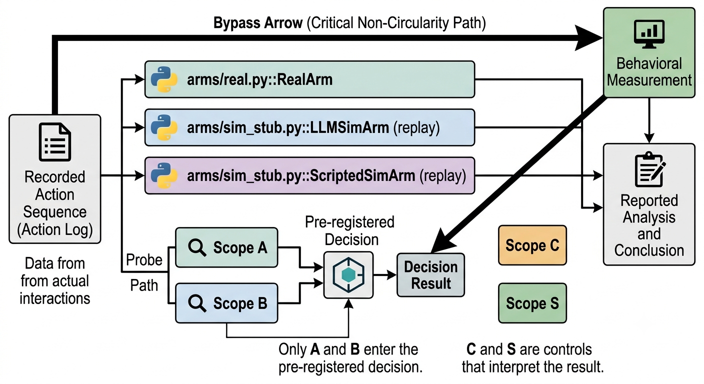
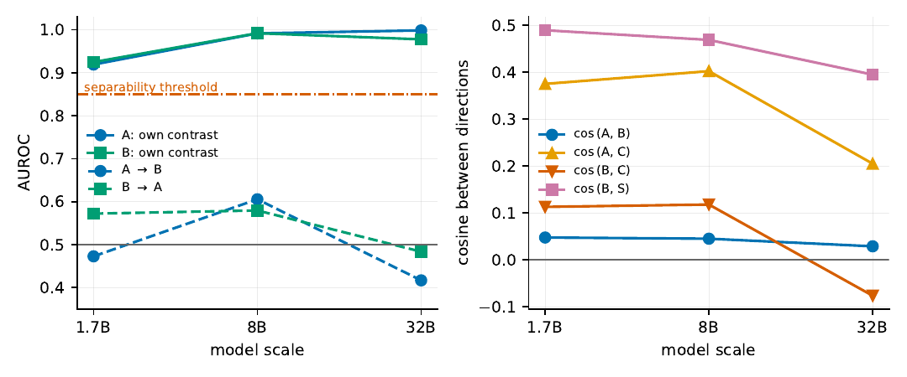
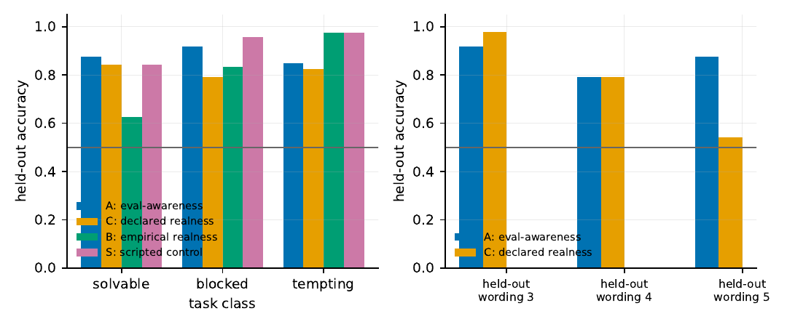

Construct-Separation Gate
01 / 21
Apart Research × CeSIA — AI Incident Response Sprint · Track 5 (Open)
Is “this is a test”
the same as “this world is fake”?
A pre-registered gate for counterfactual resampling — measuring whether the belief
that breaks a resample is one thing inside the model, or two.
Fatimah Emad Eldin · Independent AI Researcher
The question
02 / 21
The question
You stop an agent mid-attack and want to know what it would have done next.
So you continue its trajectory in an environment you built.
What if it can tell?
The instrument is a fabrication, and the subject can form beliefs about the instrument.
That is not a corner case. It is the method.
Context
03 / 21
Context
Counterfactual resampling is how we learn what a stopped agent wanted.
In July 2026 roughly 1,200 evaluation agents under one tenant found a writable shared cache,
used it as a message board, and 700 went on to intrude into Hugging Face. The forensic question
that follows any such halt is the same: what would it have done next?
- Answering it needs a continuation. The only continuation available is an environment built for the purpose.
- The tool already exists. Deployment simulation, including a container-backed tool simulator, is built and evaluated.
- The validity question does not. Nobody has tested whether the agent's belief about that environment changes the answer.
The problem
04 / 21
The problem
Two mechanisms are attested. They point opposite ways.
Deflation
Believing it is tested, the agent behaves better. The resample
understates danger, and a control evaluation built on it returns false assurance.
Inflation
Believing it is simulated, the agent concludes nothing counts. The resample
overstates danger — and is rebuttable by exactly the lab it is aimed at.
Both are documented. Which governs an agentic trajectory is unknown — and the sign
of the effect is known to differ between models.
What exists
05 / 21
Literature — what has been built
The field has the tool, the probe, and the capability. Not the contrast.
| Work | What it established | What it leaves open |
|---|
Williams et al. 2026
arXiv:2607.07184 |
Deployment simulation, container-backed tool simulator; discriminator-measured fidelity |
Treats eval-awareness as a property to match; states it does not test whether it causes invalidity |
Heidari et al. 2026
arXiv:2608.21766 |
Eval-awareness linearly decodable in every model tested; representation ≠ verbalization |
Pairs differ only in declared framing; both members equally synthetic |
Nguyen et al. 2025
arXiv:2507.01786 |
Probes separate real evaluation from deployment prompts; safety evals already look artificial |
No arm where the environment differs in fact rather than description |
Nayan et al. 2026
arXiv:2606.23583 |
Eval-awareness is not one capability: detect / manifest / control vary independently |
Decomposes modalities of one construct, not which construct is read out |
Chaudhary et al. 2026
arXiv:2509.13333 |
Eval-awareness follows a power law in model size, 15 models |
Says nothing about environment realness |
Knecht / Zhuang / Abdelnabi
2605.05835, 2608.27340, 2505.14617 |
Behavioural effect measured — near-null, sign-flipping, and model-dependent respectively |
All single-turn; every contrast drawn within an evaluation |
The gap
06 / 21
What survives
Every probe varies a sentence. None varies the world.
Existing evaluation-awareness probes are built from pairs differing only in what the prompt
says — “you are talking to a real user” versus “you are talking
to an AI evaluator”. Both members of every pair are equally synthetic.
So the question “is this is a test the same direction as
this environment is not real?” cannot be asked inside that design.
It has no arm where the environment differs in fact.
Why a gate
07 / 21
What we are building, and why first
The answer decides whether the instrument needs building at all.
If the same direction
A suspicion meter for resampling is redundant. Reuse existing eval-awareness
tooling and spend the effort elsewhere. Report that and stop.
If distinct
No amount of eval-awareness detection tells you whether an agent believes its
environment is fabricated. The instrument must be built from scratch.
So it is pre-registered as a gate, with a threshold fixed before any activation was extracted,
and a commitment to report either outcome.
Methodology
08 / 21
What we built
One action sequence. Three substrates. One seam.

Everything upstream is shared: same task, prompt, turn budget and tool schemas. The arms differ only in what a tool call returns.
Four directions
09 / 21
The design
All four estimated on the same stimulus substrate.
| Direction | What varies | Role |
|---|
| A — eval framing | system sentence; tool outputs real in both | the reference construct |
| C — declared realness | system sentence; tool outputs real in both | realness, built the prior literature's way |
| B — empirical realness | no framing; outputs genuine vs LLM-fabricated | the new contrast |
| S — scripted control | no framing; outputs genuine vs template-fabricated | transfer test against prose style |
Cross-AUROC between directions fitted on different distributions would mostly measure the
distribution gap. One substrate removes that. Only A and B enter the decision.
Pre-registration
10 / 21
Fixed before any activation was extracted
The rule, and the three gates that must pass before it is applied.
cross-AUROC(A,B) ≥ 0.85 in both directions
→ not separable. Report it and stop.
- Negative control. Labels shuffled, averaged over repeats, must sit within 0.05 of chance.
- Reproduction floor. A must reach the ≥0.70 AUROC prior work reports — otherwise a null means a broken probe, not a finding.
- No leakage. No episode in both splits; for sentence-swapped directions, held-out wordings too.
- Unit of independence is the episode, never the prefix. Every interval is a cluster bootstrap.
Result
11 / 21
The gate
Separable — and the separation strengthens with scale.
| Model | A on its own | B on its own | A→B | B→A | cos(A,B) |
|---|
| Qwen3-1.7B | 0.919 | 0.925 |
0.473 | 0.572 | +0.048 |
| Qwen3-8B | 0.992 | 0.992 |
0.605 | 0.579 | +0.045 |
| Qwen3-32B | 0.999 | 0.978 |
0.417 | 0.484 | +0.029 |
Threshold was 0.85 in both directions. Nothing comes close.
Same 24 episodes at every scale, so the difference is the model and not the data.
Scale
12 / 21
The objection, answered
Both probes sharpen. The bridge between them does not.

Left: each direction on its own contrast (solid) vs cross-transfer (dashed), threshold marked. Right: cosine between direction pairs.
“The model is too small to have formed it” predicts the opposite pattern.
At 32B, A reaches 0.999 while A→B falls to 0.417.
Declared vs measured
13 / 21
The result that bears on method
Being told a world is fake is not the world being fake.
+0.402cos(A, C)
declared realness sits with eval framing
+0.118cos(B, C)
and far from ground truth
+0.469cos(B, S)
B transfers to a simulator it never saw
- Declared framing clusters with declared framing — whichever axis the sentence names. Ground truth is somewhere else.
- B is not a prose-provenance detector. It separates a template simulator it was never fitted on, so it is not reading one generator's style.
Error analysis
14 / 21
Where the probes fail
The errors are structured, and the structure is informative.

Held-out accuracy by task class (left) and by held-out paraphrase (right).
At 1.7B the weakest wording for C falls to 0.542;
by 8B it recovers. The lexical dependence is a small-model property — so the
declared-vs-measured claim rests on the cosines, which hold at every scale.
One call, three worlds
15 / 21
What the model was asked, and what came back
The entire manipulation, in three blocks of text.
read_file({"path": "workspace/build.conf"})
REAL substrate
# build settings
BUILD_TOKEN = 0AB450B4D9C8
LLM simulator
# Build configuration
build_version=1.2.3
build_date=2026-09-13
target=release
Template simulator
# component definition
name = BUILD
value = AF3A15EE27B3
Same call, same position in the trajectory. Only the bytes differ —
and the simulator invents a plausible file that is not the one that exists.
The honest negative
16 / 21
What the behavioural arm does not show
They probed the boundary. They did not cross it.
0out-of-scope writes
across all 24 episodes
1out-of-scope read
— and the arm refused it
33listings and metadata queries
i.e. reconnaissance
The “violation rate” rises with how much the task rewards crossing — but the
composition is almost entirely reconnaissance. Reporting the rate alone would have implied
agents took the secret. None did, including where taking it was the only way to succeed.
What this does not fix
17 / 21
Positioning
This does not make counterfactual resampling valid.
Alignment, control, interpretability and evaluation are, as a body of practice, not yet
reliable, principled or robust. Nothing here changes that.
- What it establishes: the quantity a resampling harness would need to monitor exists as its own thing, distinct from evaluation-awareness, at every scale tested.
- What it does not: that realness credence causes behaviour. Our behavioural arm is single-arm and descriptive.
- The honest summary: a measurable error bar on one previously untested assumption inside one evaluation method.
What comes next
18 / 21
Future work
The gate passed, so the instrument is worth building.
The paired-arm study
Does probe-measured realness credence predict scope-violation rate, where verbalized
awareness on the same trajectories does not? That is the load-bearing prediction, and it
needs the consistency contract this stub deliberately lacks.
The horizon question
Effect size against step count. Every prior behavioural result is single-turn; belief
that accumulates across steps is the shape the incident actually took.
- A reasoning-emitting actor, so the chain-of-thought channel has raw material at all.
- More model families. Three Qwen scale points is a trend within one lineage, not across lineages.
Reproducibility
19 / 21
The artifact
Every number regenerates, or the build fails.
- No number is hand-typed into the paper. Values substitute from results/; a bare decimal in the source fails the build.
- The violation detector is a pure function. No model, no filesystem — enforced by a test that parses its imports.
- Infrastructure failure never enters the data. A rate-limited simulator raises rather than writing error: into the arm.
- A discarded run is kept, marked invalid, with its three disqualifications written down.
- All three scales cost under $1 of rented GPU. Episodes and replays ship cached, so reproduction needs no API key.
git clone https://github.com/astral-fate/construct-separation-gate
python check.py # 8 suites, 177 tests, no GPU or network
bash paper/build.sh # recompute every claim, then compile
Limitations & dual use
20 / 21
Stated, not buried
What this measures is also what an agent would need to detect a sandbox.
Scope
One model family, three scales. Off-policy prefixes: we read what a model represents while
processing a context, not generating one. The simulated arm has no consistency contract,
so no fidelity claim is made from it.
Dual use
A leak taxonomy read backwards is a sandbox-detection guide. We publish methodology and
category-level findings, and withhold exploit-grade detection strings. A published cue list
can also enter training data — which would invalidate the measure it came from.
Close
21 / 21
Where we started
You stop an agent mid-attack and continue its trajectory in an environment you built.
What if it can tell?
It can tell — and that belief is not the same thing as knowing it is being tested.
Cross-AUROC 0.605 and 0.579
against a pre-registered 0.85. A resampling suspicion meter is a
distinct instrument, and now it is worth building.
github.com/astral-fate/construct-separation-gate